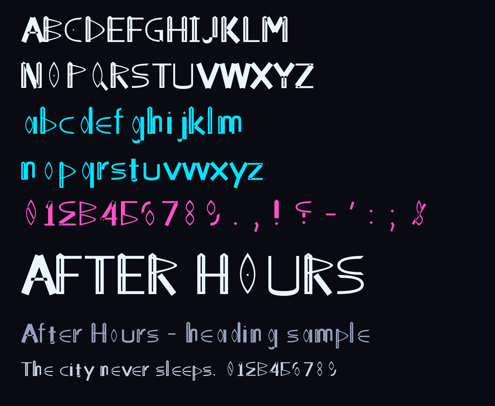

Download Afterhours-Regular.otf
Afterhours Regular — original Gothic x cyberpunk display font by bayusd. Pointed-arch blackletter bones, neon inline slits, circuit-node counters. Covers A–Z, a–z, 0–9 and . , ! ? - ' : ; & (no accented characters yet). Free to use and adapt with credit. Built from scratch with fontTools (see build_font.py). Submitted for Taskmarket bounty TSK-1ZQ87Q8M.
